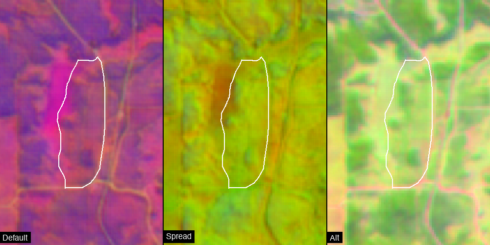
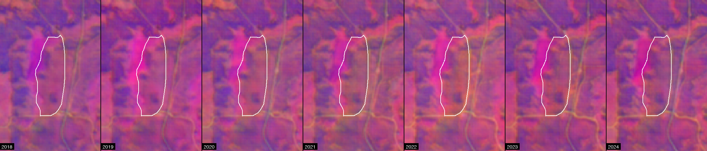

import ee
ee.Authenticate()
ee.Initialize(project='hs-brazilreforestation')datasets.alpha_embeddings
Alpha Earth Embeddings: 64-dimensional semantic representations of satellite imagery.
About Alpha Earth Embeddings
Alpha Earth Embeddings are 64-dimensional dense vector representations of satellite imagery produced by Google.
Key features: - 64 embedding bands (A00-A63) - 10m resolution - Annual composites from 2017 onwards - Unit-length vectors (no scaling needed) - Captures semantic meaning from multi-sensor time-series
Important: Individual bands lack independent meaning. The 64 dimensions work together to encode spatial and temporal patterns. Use all bands for similarity analysis, clustering, or machine learning.
get_embedding_image
def get_embedding_image(
geometry:Geometry, year:int, bands:list=None
)->Image:
Get Alpha Earth Embedding image for a specific year.
The collection stores annual images, so this filters to the requested year and mosaics any tiles covering the geometry.
Args: geometry: Region of interest year: Year to retrieve (2017 onwards) bands: Specific bands to select (default: all 64)
Returns: ee.Image with embedding bands
Example: img = get_embedding_image(site.geometry, 2023) img = get_embedding_image(site.geometry, 2023, bands=[‘A01’, ‘A16’, ‘A09’])
Usage
Extracting Embedding Values
Use extract_continuous to get the mean embedding values for a polygon:
from gee_polygons.site import load_sites
sites = load_sites('../data/restoration_sites_subset.geojson')
site = sites[0]
print(site)Site(id=3107, start_year=2016)# Extract embeddings for a year range
df = site.extract_continuous(
ALPHA_EMBEDDINGS,
start_date='2020-01-01',
end_date='2023-12-31',
reducer='mean',
frequency='yearly'
)
print(f"Shape: {df.shape}")
print(f"Columns: site_id, year, A00-A63")
df.head()Shape: (4, 66)
Columns: site_id, year, A00-A63| site_id | year | A00 | A01 | A02 | A03 | A04 | A05 | A06 | A07 | ... | A54 | A55 | A56 | A57 | A58 | A59 | A60 | A61 | A62 | A63 | |
|---|---|---|---|---|---|---|---|---|---|---|---|---|---|---|---|---|---|---|---|---|---|
| 0 | 3107 | 2020 | 0.051429 | 0.103414 | -0.159193 | -0.128978 | 0.019833 | 0.130146 | 0.116706 | 0.241309 | ... | -0.006464 | 0.123972 | 0.067628 | -0.031071 | 0.082864 | 0.035164 | 0.072382 | -0.047027 | -0.017532 | -0.330571 |
| 1 | 3107 | 2021 | 0.079712 | 0.093320 | -0.171368 | -0.113680 | 0.016212 | 0.120561 | 0.149501 | 0.259941 | ... | -0.015321 | 0.116001 | 0.086228 | -0.056849 | 0.071019 | 0.046415 | 0.060030 | -0.051776 | -0.019477 | -0.331156 |
| 2 | 3107 | 2022 | 0.072090 | 0.123538 | -0.181573 | -0.112572 | 0.030015 | 0.146240 | 0.113321 | 0.265398 | ... | -0.012064 | 0.091692 | 0.071432 | -0.052110 | 0.108490 | 0.017806 | 0.062049 | -0.078349 | 0.009921 | -0.345070 |
| 3 | 3107 | 2023 | 0.066441 | 0.094494 | -0.165421 | -0.116780 | 0.038526 | 0.126812 | 0.110835 | 0.276009 | ... | 0.014570 | 0.084251 | 0.085341 | -0.036375 | 0.095532 | 0.027515 | 0.093615 | -0.077840 | -0.020993 | -0.327966 |
4 rows × 66 columns
# The embedding vector for a single year
embedding_2023 = df[df['year'] == 2023][EMBEDDING_BANDS].values[0]
print(f"2023 embedding shape: {embedding_2023.shape}")
print(f"First 10 values: {embedding_2023[:10]}")2023 embedding shape: (64,)
First 10 values: [ 0.0664412 0.0944937 -0.16542051 -0.1167795 0.03852644 0.12681178
0.11083481 0.27600854 -0.03367958 -0.02094349]Visualization
Since embeddings have 64 dimensions, we visualize by selecting 3 bands for RGB. Different band combinations reveal different patterns:
from gee_polygons.visualize import render_image
# Get embedding image for visualization
emb_image = get_embedding_image(site.geometry, 2023)
# Render with default band combination
img = render_image(
image=emb_image,
region=site.geometry.buffer(500).bounds(),
vis_params=EMBEDDING_VIS_DEFAULT,
dimensions=400,
boundary=site.geometry,
label='Embeddings 2023 (A01/A16/A09)'
)
img
# Try different band combinations
from gee_polygons.visualize import export_frames_as_strip
band_combos = [
(['A01', 'A16', 'A09'], 'Default'),
(['A00', 'A32', 'A63'], 'Spread'),
(['A05', 'A25', 'A45'], 'Alt'),
]
frames = []
for bands, name in band_combos:
vis = {'min': -0.3, 'max': 0.3, 'bands': bands}
frame = render_image(
image=emb_image,
region=site.geometry.buffer(500).bounds(),
vis_params=vis,
dimensions=500,
boundary=site.geometry,
label=name
)
frames.append(frame)
export_frames_as_strip(frames, '../outputs/embedding_band_combos.png')
from IPython.display import Image as IPImage
IPImage('../outputs/embedding_band_combos.png')
Temporal Comparison
Compare embeddings across years to see how a site changes:
# Embedding timestrip 2018-2023
from gee_polygons.visualize import export_frames_as_gif
frames = []
for year in range(2018, 2025):
emb_image = get_embedding_image(site.geometry, year)
frame = render_image(
image=emb_image,
region=site.geometry.buffer(500).bounds(),
vis_params=EMBEDDING_VIS_DEFAULT,
dimensions=500,
boundary=site.geometry,
label=str(year)
)
frames.append(frame)
# Export as strip and GIF
export_frames_as_strip(frames, '../outputs/embedding_2018_2024.png')
export_frames_as_gif(frames, '../outputs/embedding_2018_2024.gif', duration_ms=700)
IPImage('../outputs/embedding_2018_2024.png')
Similarity Analysis
Since embeddings are unit vectors, you can compute cosine similarity between years:
import numpy as np
# Get embeddings for multiple years
df = site.extract_continuous(
ALPHA_EMBEDDINGS,
start_date='2018-01-01',
end_date='2024-12-31',
reducer='mean',
frequency='yearly'
)
# Extract embedding vectors
years = df['year'].values
embeddings = df[EMBEDDING_BANDS].values
# Compute cosine similarity matrix
# Since vectors are unit length, cosine similarity = dot product
similarity_matrix = embeddings @ embeddings.T
print("Cosine similarity between years:")
import pandas as pd
sim_df = pd.DataFrame(similarity_matrix, index=years, columns=years)
sim_df.round(3)Cosine similarity between years:| 2018 | 2019 | 2020 | 2021 | 2022 | 2023 | 2024 | |
|---|---|---|---|---|---|---|---|
| 2018 | 0.920 | 0.902 | 0.910 | 0.897 | 0.883 | 0.898 | 0.887 |
| 2019 | 0.902 | 0.920 | 0.901 | 0.899 | 0.886 | 0.903 | 0.892 |
| 2020 | 0.910 | 0.901 | 0.921 | 0.907 | 0.897 | 0.907 | 0.895 |
| 2021 | 0.897 | 0.899 | 0.907 | 0.923 | 0.904 | 0.909 | 0.896 |
| 2022 | 0.883 | 0.886 | 0.897 | 0.904 | 0.906 | 0.900 | 0.886 |
| 2023 | 0.898 | 0.903 | 0.907 | 0.909 | 0.900 | 0.919 | 0.911 |
| 2024 | 0.887 | 0.892 | 0.895 | 0.896 | 0.886 | 0.911 | 0.917 |